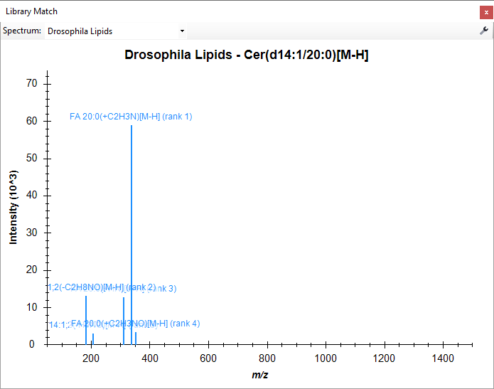
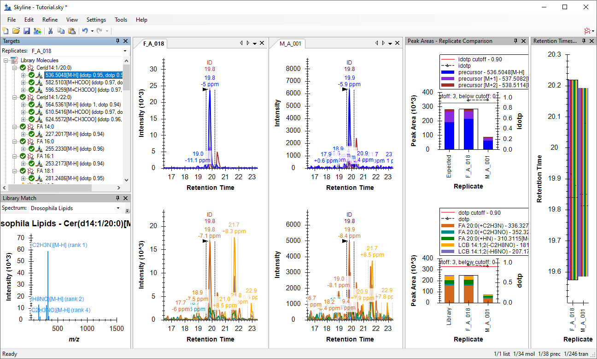
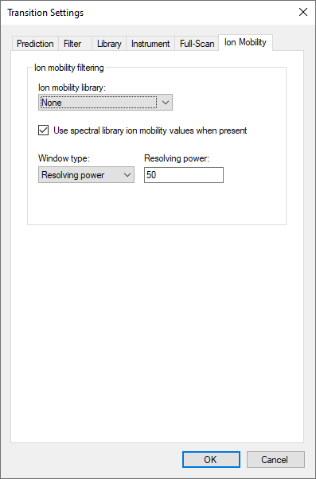
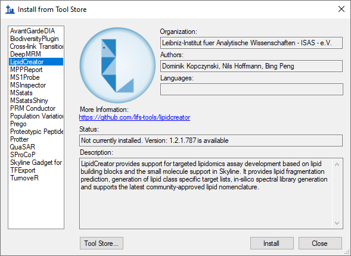

In this tutorial, you will learn how to utilize spectral libraries and drift time filtering for analysis of complex ion mobility spectrometry-mass spectrometry (IMS-MS) small molecule data. The Skyline IMS-MS capabilities are compatible with platforms where collision cross section (CCS) values are calculated such as DTIMS, TIMS, and TWIMS instruments. (Skyline also supports FAIMS ion mobility filtering, though that is not covered here.) A spectral library containing m/z, retention time, fragmentation, and ion mobility information for a set of lipids in fruit fly samples will be explored and added to a Skyline document. The CCS values for each molecule can then be used to increase the selectivity of precursor and fragment extracted ion chromatograms above what can be realized by high mass resolution alone, thereby reducing interference from other ions.
In this more advanced tutorial, some familiarity with Skyline is assumed. If you are not familiar with Skyline, you should first work through some of the introductory tutorials at
http://skyline.ms/tutorial-index.url
To start this tutorial, download the following ZIP file:
https://skyline.ms/tutorials/SmallMoleculeLibraries.zip
There is a total of over 2 GB of data, so downloading may take a while.
Extract the files in it to a folder on your computer, like:
C:\Users\bspratt\Documents
This will create a new folder:
C:\Users\bspratt\Documents\SmallMoleculeLibraries
It will contain the Skyline files necessary for this tutorial.
The .d folders contain data from a male (M) and female (F) fruit fly (Drosophila melanogaster) lipid extract.
If you have been using Skyline prior to starting this tutorial, it is a good idea to revert Skyline to its default settings. To do so:

The document settings in this instance of Skyline have now been reset to the default.
Since this tutorial covers a small molecule topic, you can choose the molecule interface by doing the following:

Skyline is operating in molecule mode, as indicated by the molecule icon  in the upper right-hand
corner of the Skyline window. Skyline’s proteomics-specific menus and controls are now hidden, allowing you to focus on small molecule
analysis.
in the upper right-hand
corner of the Skyline window. Skyline’s proteomics-specific menus and controls are now hidden, allowing you to focus on small molecule
analysis.
You will need to review the transition settings before adding the spectral library and results data.
To do this, perform the following steps:
The transition filter settings are used to decide which library entries are suitable for inclusion in the Skyline document. Only entries with adducts that match the filters will be selected for use.
These adducts can also be added using the drop-down menus accessed by the arrow buttons. Navigate to the Adducts- menu, and select the appropriate adducts.
The Transition Settings form should now look like this:

The Transition Settings form should look like this:

The Transition Settings form instructs Skyline to extract 3 precursor isotope peaks from MS1 (low-energy) spectra and fragment ions from MS/MS (high-energy) spectra acquired at ~28,000 resolving power on a TOF instrument. Utilizing lower 20,000 resolving power accounts for the difference in resolving power between ions of different concentrations. The acquisition method “DIA” and isolation scheme “All Ions” indicate to Skyline that the spectra are alternating low- and high-energy without precursor isolation. When Use high-selectivity extraction is checked, Skyline extracts a single resolution width around the target m/z, and when it is unchecked Skyline extracts 2x the resolution width, which should increase the total number of ions included in the extraction but at the risk of increasing interference.
The Prediction tab does not apply to this tutorial and the Library and Instrument tabs have acceptable defaults. The Ion Mobility tab will be revisited later in the tutorial.
Before you can explore the library, Skyline must be directed to its location by adding your library of interest to the global list of libraries for document editing. The library used in this tutorial was created in Skyline from experimental data and a transition list generated by LipidCreator.
To get started with the small molecule library containing Drosophila lipids perform the following steps:
The Libraries list in the Molecule Settings form should now contain the Drosophila Lipids library you just created.
The Molecule Settings form should now look like this:

To open the library explorer and view the contents of the library you just added, do the following:
The library explorer should now look like this:

On the left side of the explorer, the Library list illustrates that you are currently viewing the Drosophila_Lipids library. The Molecule list below it shows the lipid common names and adducts which have been matched to the spectra in this library. The <<Previous and Next>> buttons are disabled for this library, because all of its spectra can be listed in a single page. At the very bottom, the library explorer reports that the page contains 1 through 38 of a total 38 molecule spectrum matches.
Hover your cursor over any molecule, and Skyline will display the name, formula, and precursor m/z.
To narrow the list of molecules with the molecule filter box, do the following:
The library explorer will display all phosphatidylglycerol (PG) lipids in the library. In this case, the list is reduced to four PG lipids.
Turning your attention to the right side of the library explorer, you will see a Skyline MS/MS spectrum similar to the one Skyline displays during document editing, and in fact this chart supports most of the same features. To explore a few of these features, take note of the following:
To add all the molecules in the library to your target list:
A popup window will then notify you that this will add 34 molecules, 38 precursors, and 246 transitions to the document.
Your Skyline window should now look like this:

In this section, you will import the Drosophila data without utilizing IMS filtering. This is an initial look at the data to see the impact of interference among lipids and their shared fragments. To import the data, perform the following steps:
The Import Results form will appear as follows:

The Import Results Files form will now show the .d files you have extracted into the tutorial folder:

This should start the import and cause Skyline to show the Importing Results progress form:

Once the files are imported, you can examine the chromatograms to evaluate interference from peaks with retention times and m/z values within the tolerance of your target list.
To see a bit more of the gradient time range, do the following:
Your chromatogram graphs should appear as follows:

Note that while the precursor extracted ion chromatogram (XIC) is clean, the transitions for FA 16:0(+O) and FA 18:1(+O) are highly abundant across a large portion of their XICs. This is due to the nature of lipid fragmentation, as most lipids with 16:0 or 18:1 fatty acyl chains will share those same fragments. Similar results will be observed for each lipid you select, especially the other phospholipids (PC, PE, PG, PI).
Since there are only 38 precursors in this document, you may want to review all 38 to get an overall feel for how the XICs look prior to IMS filtering. Before starting this review, do the following:
This should leave the Library Match view showing an MS/MS spectrum like this:

You should end up with a similar layout to the one shown below:

To adjust the zooming on the chromatogram graphs:
Skyline often does a good job picking peaks and most integration boundaries do not need to be edited. However, there are a few isomer pairs that require some manual adjustment to the default integration.
The first two cases are the lysophospholipids (LPC and LPE), which are phospholipids with one fatty acyl chain cleaved off. These molecules chromatographically separate depending on the sn- position of the single fatty acyl chain. Here the “ID” annotations in the chromatogram graphs (indicating matching spectra in the library) can be utilized to determine the elution order of the LPC(0:0/18:2)/LPC(18:2/0:0) and LPE(0:0/16:0)/LPE(16:0/0:0) pairs.
Note that male and female fruit flies have vastly different lysophospholipid profiles, which was also observed across almost all lysophospholipids in a larger Drosophila study.
The final isomer pair is near the bottom of the document. PG(16:0_18:3) and PG(16:1_18:2) have different fatty acyl compositions, but the same total number of carbons and double bonds, causing them to share the same precursor formula and m/z value.
The product XIC may not be useful until IMS filtering is utilized.
To this point, the IMS dimension in this data has been ignored. To better understand the IMS separation, you need to look at the underlying spectra from which these chromatograms were extracted by doing the following:
This should bring up the Full-Scan view showing a familiar two-dimensional spectrum in profile mode:
You can see that there is a small interference above the most intense visible ion.
These two ions are well-separated by IMS with the most intense ion below 34 ms and the interference above 36 ms.
This is a fairly typical MS1 spectrum for IMS-MS lipidomics data. You can get a better sense of the data by zooming into multiple areas on this plot. You can also select other lipids and click on the blue circle at the apex of each precursor chromatogram peak to see how this plot can differ with retention time. An interesting example is PE(O-18:0/16:1), which has distinct ion distributions showing correlations between m/z and drift time for different lipid classes.
To inspect a relevant MS/MS spectrum:
The Full-Scan graph should change to:
You can see that at least three visible ions are contributing to the extracted intensities at 33, 37, and 44 ms. This goes back to the nature of lipid fragmentation as previously discussed, where most lipids with an 18:3 fatty acyl chain will share this fragment. The complexity is increased for fatty acyl chains fragments with fewer double bonds, such as 18:2 at m/z 279, which may have multiple ions as well as isotopic overlap from the abundant 18:3 fragment at m/z 277 contributing to the extracted intensity. A similar observation can be made with the FA 16:1(+O) fragment.
This is also a typical IMS-MS/MS spectrum, where you can imagine each horizontal stripe as a top-down view of a normal 2D spectrum. Clearly, there are many signals in this 3D space other than the one at 34 ms.
It should now be clear that the selectivity of chromatogram extraction in MS/MS and even MS1 can be improved by utilizing IMS and extracting only a limited drift time range around the area of interest.
Skyline can learn and apply the IMS drift times directly from the results data, which is explained in detail in the Training a Drift Time Predictor section of the Skyline Ion Mobility Spectrum Filtering tutorial. In this tutorial, however, you may recall that the spectral library contains collision cross section (CCS) values for each molecule, which can now be use to extract only limited drift time ranges for additional identification confidence and selectivity.
Prior to changing the settings and reimporting the data, you may want to save the current Skyline document and create a second file in order to compare the data before and after IMS filtering. To do so:
The data files have been single field calibrated using vendor software, meaning Skyline can easily convert between drift time and CCS. CCS values are normalized and reproducible, allowing the use of previously determined CCS (from databases and standards) to filter the data. To utilize the IMS information stored in the library, perform the following steps:
The Transition Settings should now look like this:

The results must now be reimported with the newly applied IMS settings as follows:
This should start the re-import and cause Skyline to show the Importing Results progress form. When the import has completed:
To explore the filtered data, perform the following steps:
The Full-Scan graph should now look something like this:
The horizontal violet range showing the filter imposed by the CCS (261 Å2) is now visible and stored in the Skyline document. The signal outside of this drift time range has been ignored by Skyline during chromatogram extraction. Therefore, the interference at 36 ms has been removed. To view the filtered MS/MS data:
You may notice that the fragment ions have slightly lower drift times than the precursor. This occurs because the voltage applied in the collision cell causes the smaller fragment ions to have a higher velocity and arrive at the detector slightly faster than the larger precursor ions. This is accounted for by adding high energy drift time offset values to the spectral library.
Select other targets to compare the current chromatograms to those observed prior to drift time filtering. To further investigate the filtering of interferences, click on the apex of the precursor and fragment peaks.
Note that if you were interested in lipids that are not present in the current spectral library, you can add to it manually or using LipidCreator. To access the LipidCreator plugin, do the following:

A progress form should appear as LipidCreator is downloading. When it finishes, LipidCreator can be accessed directly from the Tools menu.
The following steps can be taken to easily export an updated spectral library once you have an expanded set of results for new lipids of your choosing:
In this tutorial, you have learned how to work with small molecule spectral libraries and IMS data in Skyline. You now understand the settings required for chromatogram extraction from this type of data. You can import, export, and inspect the contents of any small molecule spectral library. You have learned to interpret the alternating MS1 and MS/MS three-dimensional spectra produced by an IMS enabled mass spectrometer for complex lipidomics datasets. You can now use CCS values for drift time filtering to enhance the selectivity of chromatograms extracted by Skyline. Having completed this tutorial, you should be ready to take full advantage of multidimensional spectral libraries to improve your analysis of small molecules.